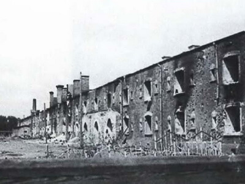
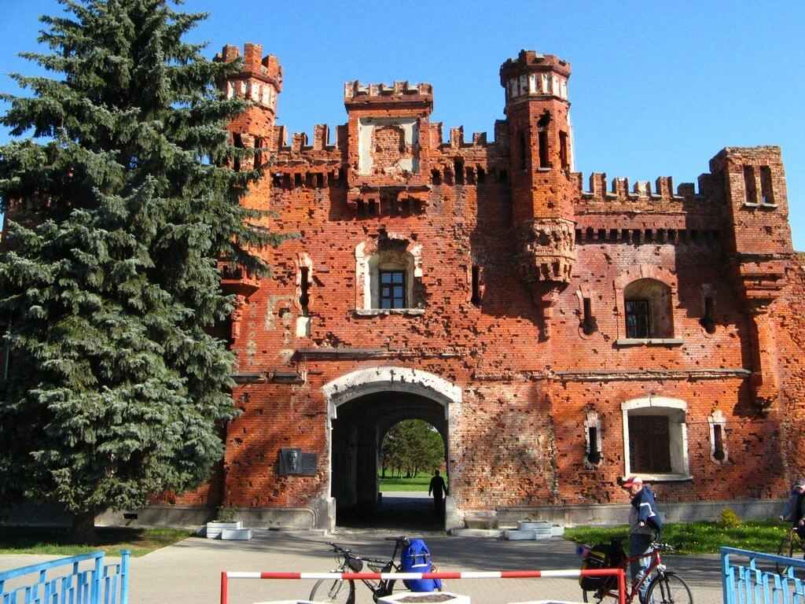

History of heroism
History is the best teacher.
The Brest Fortress
At the beginning of 19th century on the order of the Russian tsar Nikolay I the city together with habitants was carried into new place, and in place of city, building of protective defensive fortress is begun. A fortress was built almost 10 and afterwards broadened constantly, became stronger and adapted to the appearing new types of armament. In those years a fortress was very powerful defensive building. Repeatedly on a fortress attacks were accomplished, she went across from one hands in other. But, certainly the most heroic pages in history of fortress were entered by soviet warriors, first entering into an unequal fight with an enemy in June, 1941. In spite of the fact that in Soviet union and especially in border-line districts, increase rumors walked about possibility of war with Germans, for all people she began suddenly. In Brest fortress too prepared to war, but however she found border guards and peaceful habitants of city by surprise. June 21, 1941 in the fortress was an ordinary military life.
When at 4 am on June 22 a massive bombardment began, many commanders became embarrassed, considering this a provocation from German side. The telephone connection between the units and the high command was interrupted. Aerodromes and military equipment were destroyed in the first hours of the war. The best German divisions that were to capture the fortress in the first hours of the war were thrown at Brest Fortress. But Brest Fortress did not give up. The military units of Major-General Korobkov's army entered into an unequal battle with the enemy. Defenders of Brest Fortress, who remained in the fortress 3,5-4 thousand soldiers and commanders gave the enemy the strongest resistance. The fights went on throughout the fortress, literally for every piece of land. The fighters had to beat 7-8 attacks a day. In addition to the soldiers in the fortress, their wives and children were left, who helped the soldiers, provided ammunition and helped the wounded. Against the defenders of the fortress, the enemy used aviation, reinforced shelling from guns, gases and flamethrowers. But the defenders of the fortress did not give up. The fortress ran out of food, there was no water. When it became clear that in the near future there was nowhere to wait for help, it was decided to withdraw women and children from the fortress. They left the fortress on June 28, 1941. Defense fortress lasted even more than a month. Many fighters were killed, some wounded were taken prisoner. The last defenders of the fortress showed amazing miracles of heroism. They made their last inscriptions on the walls: "We'll die, but we will not leave the fortress", "I'm dying, but I'm not giving up. Farewell to the Motherland. 20.VII.41 gg. " None of the banners of the military units who fought for the fortress, did not fall to the enemy. According to approximate estimates, about three thousand commanders and Red Army soldiers were killed in the fortress. Most of the participants in the defense died in battle or in German captivity. Only a few of them managed to escape from the encirclement and continue the struggle on the fronts and in the partisan detachments. Before the Great Victory about 400 people lived. May 8, 1965 Brest Fortress was awarded the honorary title of "Hero Fortress", awarded Order of Lenin and the medal "Gold Star", which are in perpetual storage in the Museum of Defense.
The memorial complex "Brest Fortress" was opened in 1971. The opening ceremony was attended by honorary guests: defense participants, delegations of hero cities, former commanders of military units liberating the city, veterans of the war. And today the memorial is the center of pilgrimage for tourists from Belarus, Russia, CIS countries and the whole world and on the Ceremonial Square there are celebrations, meetings of veterans, youth festivals. Every year at the end of June a "train of memory" departs from Moscow to Brest with veterans, relatives and friends of the defenders of the fortress, students and schoolchildren. And at 4 am in the morning in the Brest Fortress is a requiem of memory to the fighters for the freedom of their Motherland.